Da primeira viagem criada até a passagem escolhida: o que cada tela faz, a ordem de usar e as dúvidas mais comuns.
No navegador do celular ou do computador: viagempro.luqsys.com.br (o endereço antigo, milhaspro.luqsys.com.br, abre o mesmo sistema).
Ainda não tem conta? Toque em Testar 3 dias grátis. Quer só conhecer? Veja a demo abre uma conta de exemplo.
A tela de entrada não tem "esqueci a senha". Chame o suporte no WhatsApp que a gente libera uma nova. Pra trocar a senha, o admin da conta vai em ⚙️ Ajustes → Usuários → Editar.
Em ⚙️ Ajustes → 📲 Instalar no celular tem o passo a passo do iPhone e do Android. O app fica com ícone na tela de início.
Depois de entrar com a senha, toque em 🔐 Ativar Face ID no topo. Vale pro aparelho em que você ativou. A senha continua valendo.
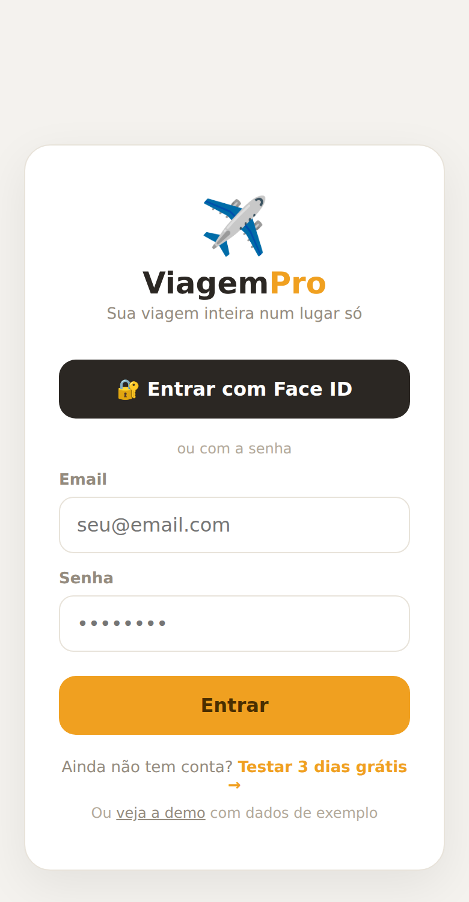
| 🏠 Início | Próxima viagem, suas milhas, alerta de vencimento e a calculadora "vale a pena?". |
| 🧳 Viagens | Planejamento: roteiro com IA, passagens e reservas, mapa, preços e hotéis da viagem. |
| ✈️ Buscar | Passagem em milhas, em dinheiro e hotel, sem precisar criar viagem. |
| 💬 Ajuda | Assistente com IA pra tirar dúvidas sobre milhas, e o link pra Central de ajuda. |
| ⚙️ Ajustes | WhatsApp pra avisos, usuários da conta, ajuda e instalar no celular. |
No primeiro acesso abre a tela de boas-vindas, com 6 passos. Cada cartão leva direto pra tela certa:
Em 🧳 Viagens → + Nova. Só o destino é obrigatório.
Cadastre as pessoas (com a idade das crianças) e toque em ✨ Gerar roteiro com IA.
No Início: programa, saldo e vencimento.
Em ✈️ Buscar: milhas, dinheiro ou hotel.
Em ⚙️ Ajustes, pra receber os avisos.
Ícone na tela de início, igual aplicativo.
Depois toque em Ir pro sistema →. Dá pra rever esses passos em ⚙️ Ajustes → 🚀 Primeiros passos.
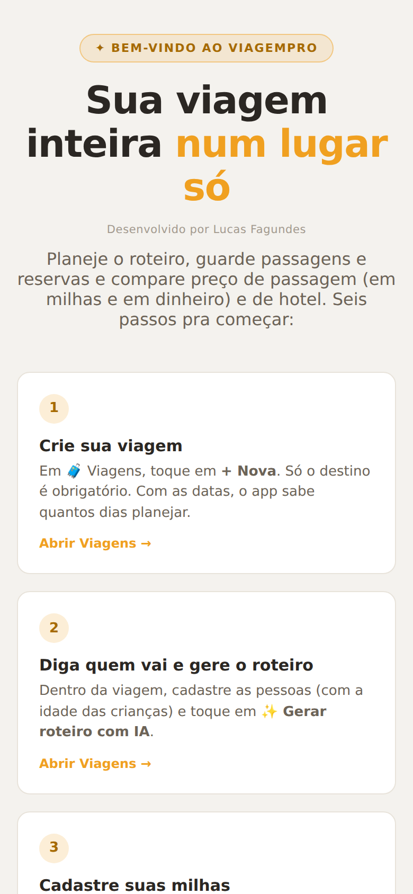
O Início mostra primeiro a próxima viagem: quantos dias faltam e se o roteiro já foi gerado. Logo abaixo, o total das suas milhas e quanto elas valem, mais ou menos, em reais.
Milha que vence nos próximos 90 dias aparece com aviso em vermelho no Início.
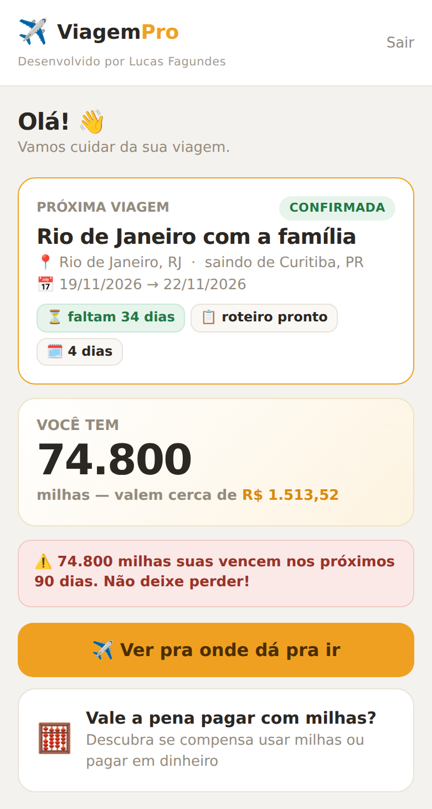
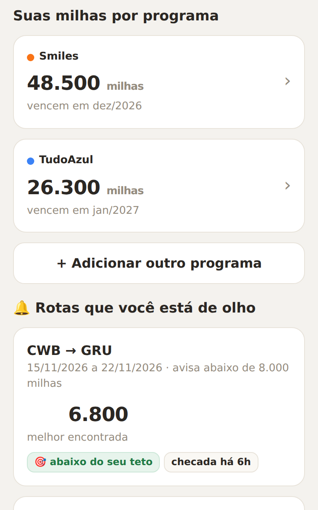
Uma rota monitorada tem origem, destino, um período e um teto de milhas. O sistema confere a rota de tempos em tempos. Quando aparece passagem abaixo do teto, manda aviso no WhatsApp cadastrado em Ajustes.
No Início aparece a melhor oferta encontrada, se está abaixo do teto e quando foi a última checagem.
No Início, toque em 🧮 Vale a pena pagar com milhas? e preencha:
O app mostra quanto cada mil milhas rende em reais. Com o preço que você pagou pelas milhas, ele responde se vale usar milhas ou se é melhor pagar em dinheiro, e quanto você economiza ou perde.
Os números da imagem são só um exemplo.
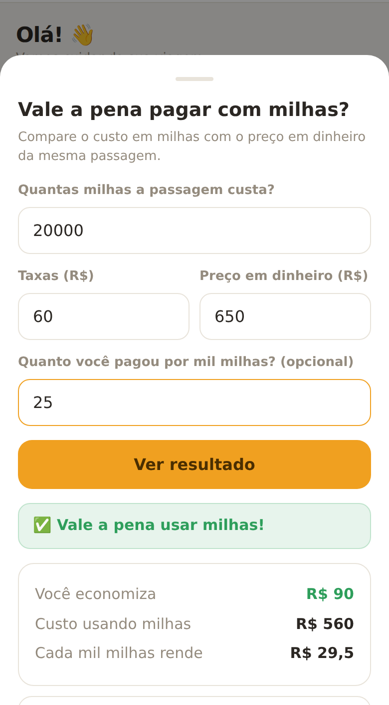
Não sabe pra onde ir? Toque em 🧭 Descobrir destino. Diga de onde sai, a época, quantas pessoas, quantos dias e o que gosta. A IA sugere destinos com custo aproximado por pessoa, e Criar viagem já abre o cadastro preenchido.
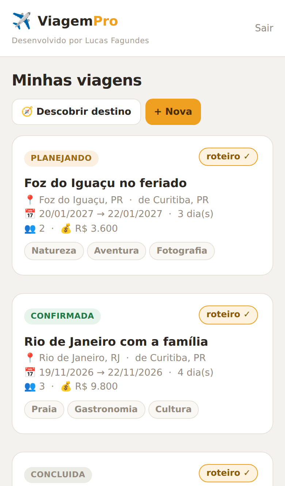
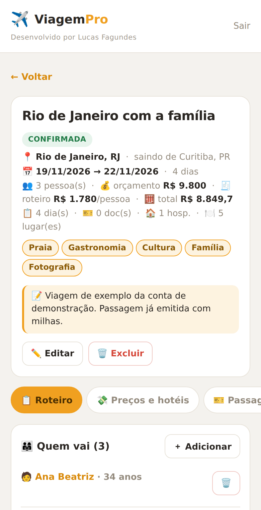
O topo resume destino, datas, pessoas, orçamento e custo total. Abaixo ficam as abas:
| 📋 Roteiro | Quem vai, roteiro dia a dia e custo estimado. |
| 💸 Preços e hotéis | Passagem em milhas e em dinheiro e hospedagem pras datas da viagem. |
| 🎫 Passagens | E-tickets, reservas e vouchers. A IA lê o arquivo. |
| 📝 Notas | Prints e observações, com link e anexo. |
| 🗺️ Mapa | Hospedagens, pontos e o que tem por perto. |
| 🚦 Como ir | Carro, avião ou ônibus: custo e tempo estimados pela IA. |
| 🍽️ Onde comer | Sugestões por cidade, pra pôr num dia. |
| 💬 Assistente | Chat que conhece esta viagem. |
Com criança, a IA monta o roteiro no ritmo da família. Uma atividade pode ser de uma pessoa só, e o filtro mostra o dia de cada um.
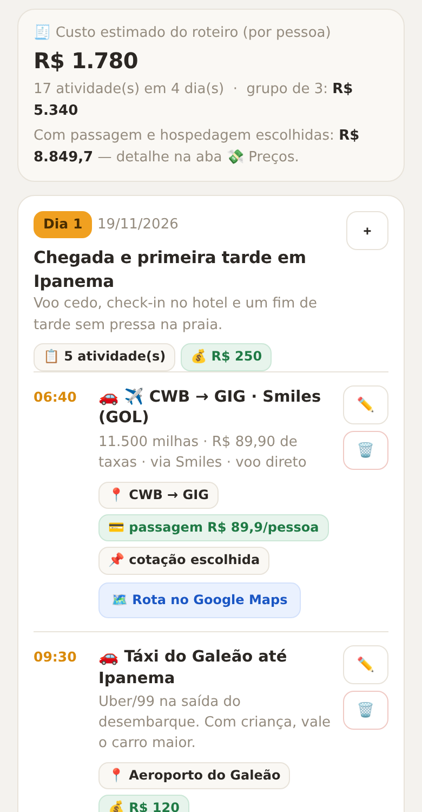
O cartão 💰 Quanto essa viagem está custando soma passagem (por pagante), hospedagem e roteiro e compara com o orçamento.
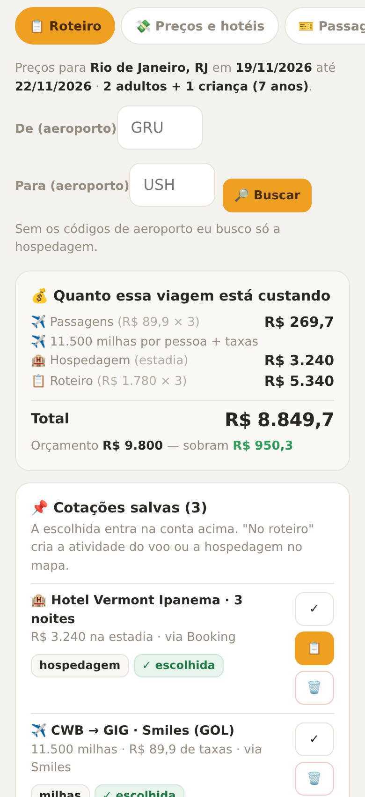
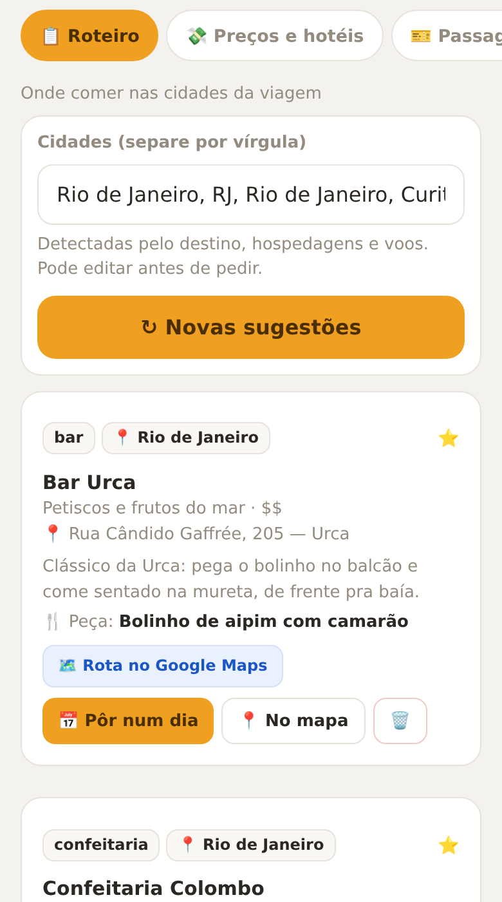
A aba ✈️ Buscar pesquisa sem precisar de viagem criada. No topo, escolha ✈️ Milhas, 💵 Dinheiro ou 🏨 Hotéis.
Cada oferta mostra milhas, taxas, horário, paradas e um selo: Ótimo negócio, Bom negócio, Tá ok ou Tá caro. Botões:
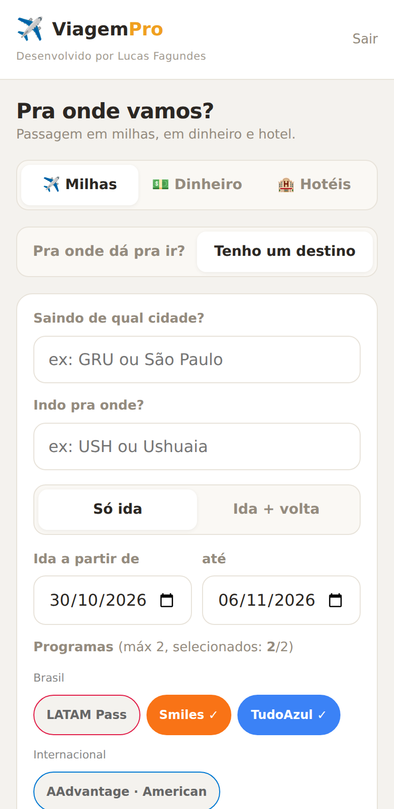
A compra é feita fora do app: no site do programa, da companhia ou do hotel. O ViagemPro mostra onde está o preço e como reservar.
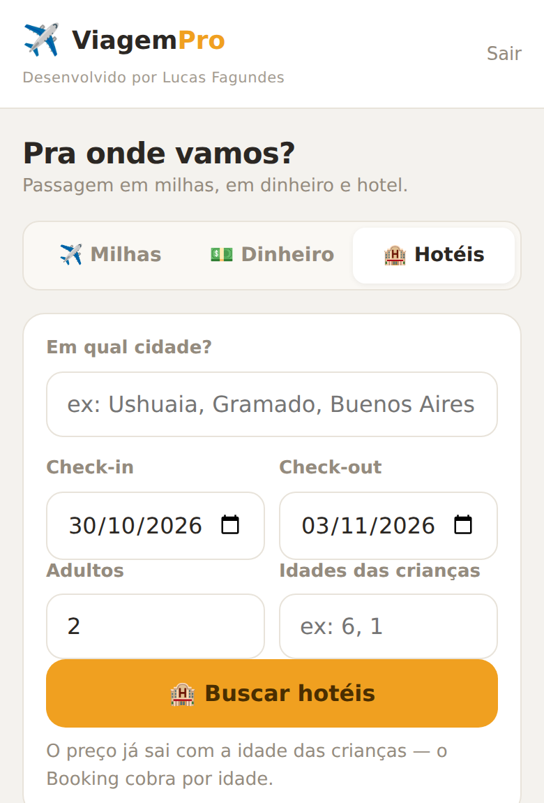
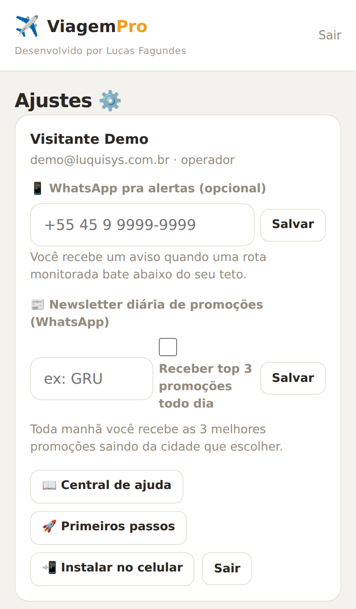
| Número pra receber os avisos das rotas abaixo do teto. | |
| Newsletter | Quando disponível: as 3 melhores promoções do dia saindo do aeroporto que você escolher. |
| Usuários | O admin cria logins em Usuários → + Novo. Perfis: admin (tudo, inclusive usuários), operador (tudo menos usuários) e visualizador (só olha). Dá pra ajustar cada permissão. |
| 💬 Ajuda | Assistente com IA pra dúvidas sobre milhas. A IA pode errar: confira no site do programa. |
| 📖 Central de ajuda | Todas as respostas, com busca. Fica em Ajustes e na aba 💬 Ajuda. |